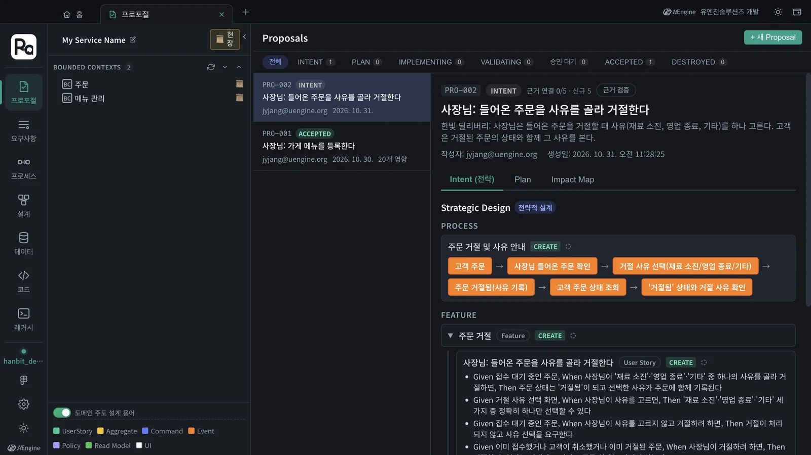
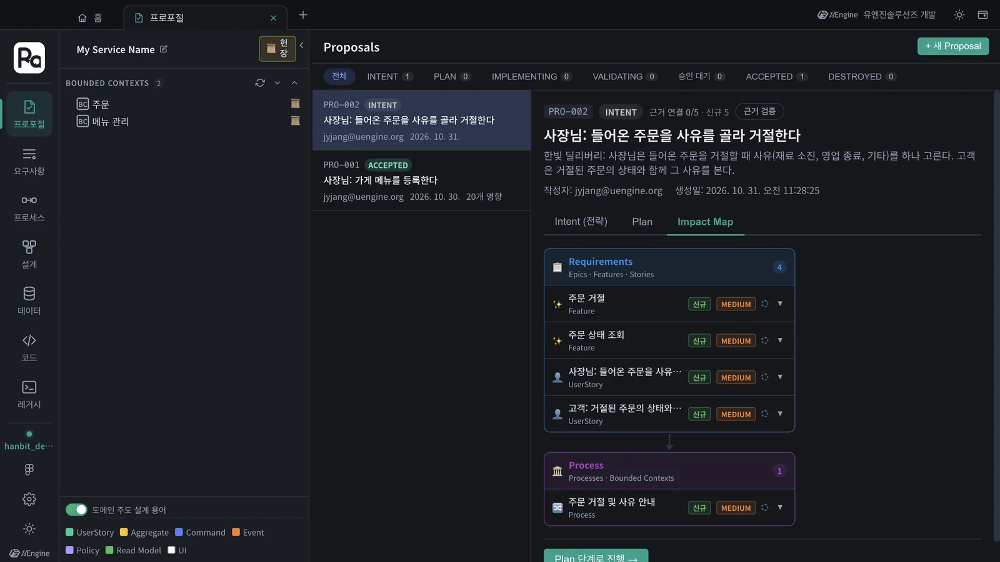
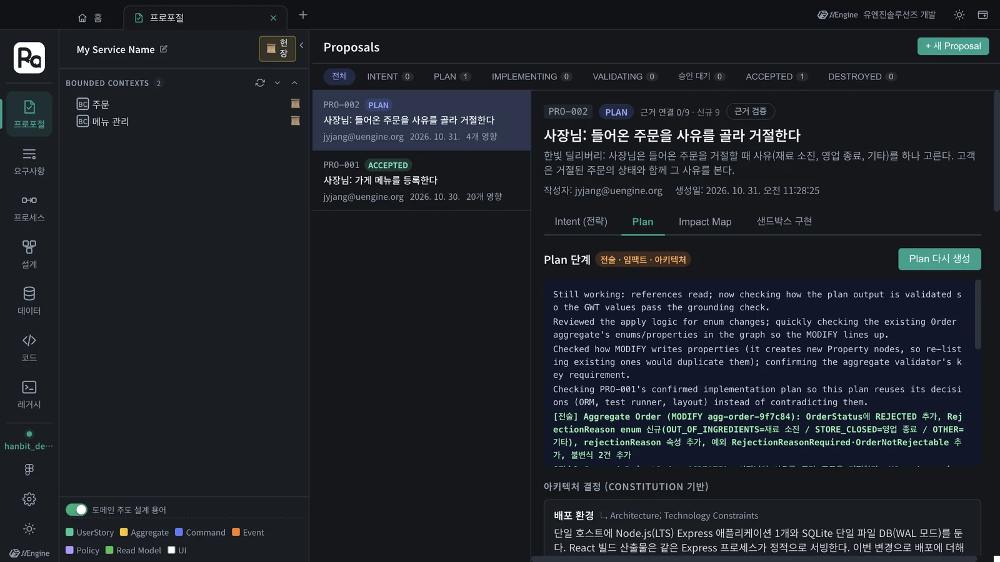
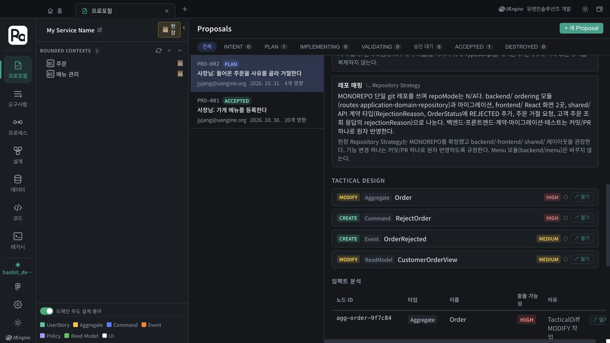
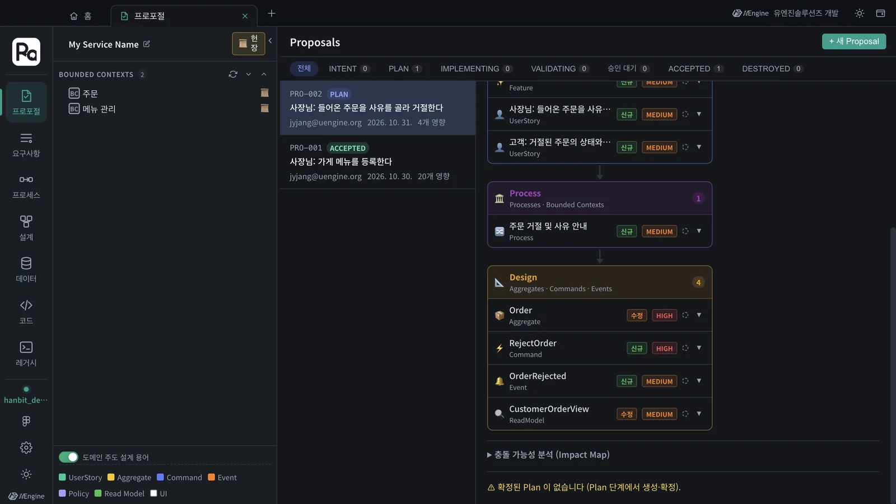

수락된 설계 위에 새 요구사항을 넣으면, 프로포절은 무엇을 새로 만들고(CREATE) 무엇을 고치는지(MODIFY) 나눠 보여 줍니다. 「주문 거절 사유」를 PRO-002로 넣어 보니, 전략 설계는 기존 「주문」 컨텍스트에 기능을 더했고, Plan은 PRO-001의 애그리거트 Order를 고치는 MODIFY와 충돌 가능성 HIGH를 냈습니다.
왜 변경 영향도인가#
첫 프로포절(3~7장)은 빈 그래프에 새로 만들었습니다. 실제 일은 대부분 이미 있는 것을 고치는 일입니다. 그때 알고 싶은 것은 두 가지입니다.
- 무엇이 바뀌나 — 새로 만드는 것(CREATE)과 기존 것을 고치는 것(MODIFY)
- 어디가 위험한가 — 이미 구현 · 수락된 요소를 건드리는 곳(충돌 가능성)
INTENT 스킬은 「기존 도메인 구성 요소와 일치하면 그 id를 재사용한다」는 규칙으로, Plan은 그래프의 기존 애그리거트를 읽어 MODIFY를 냅니다. Impact Map은 그 결과를 요구사항 · 프로세스 · 설계 층으로 모아 보여 줍니다.
따라 하기 1 — 프로포절 만들기#
- 7장까지 마친
hanbit_delivery프로젝트에서 프로포절 탭 › + 새 Proposal을 누릅니다. - 다음 문장을 넣고 AI 분석 시작을 누릅니다. 이 튜토리얼에서는 명확화 질문 없이 80초 만에 끝났습니다.
한빛 딜리버리: 사장님은 들어온 주문을 거절할 때 사유(재료 소진, 영업 종료, 기타)를 하나 고른다. 고객은 거절된 주문의 상태와 함께 그 사유를 본다.

전략 설계에는 기능 「주문 거절」 · 「주문 상태 조회」, 사용자 스토리 두 개, 프로세스 「주문 거절 및 사유 안내」가 나왔습니다. 눈여겨볼 점은 새 바운디드 컨텍스트를 만들지 않았다는 것입니다 — 두 기능 모두 PRO-001에서 생긴 기존 주문 컨텍스트 아래에 들어갔습니다.
인수 조건은 문장의 규칙과, 문장에 없던 경계도 다룹니다.
| 규칙 | 인수 조건 (Given · When · Then) |
|---|---|
| 사유를 골라 거절 | 접수 대기 주문 · 세 사유 중 하나를 골라 거절 · 상태 「거절됨」, 사유가 함께 기록 |
| 사유는 하나 | 거절 사유 선택 화면 · 사유를 고름 · 세 가지 중 정확히 하나만 |
| (문장에 없던 것) 사유 없이 | 접수 대기 주문 · 사유 없이 거절하려 함 · 처리되지 않고 사유 선택을 요구 |
| (문장에 없던 것) 이미 끝난 주문 | 이미 접수 · 취소 · 거절된 주문 · 거절하려 함 · 거부 |
| 고객이 사유를 봄 | 「재료 소진」으로 거절된 주문 · 고객이 조회 · 「거절됨」과 「재료 소진」이 함께 표시 |
따라 하기 2 — 인텐트 단계의 Impact Map#
Impact Map 칸을 엽니다. 인텐트 단계에서는 요구사항(기능 2 · 스토리 2)과 프로세스(1)만 있고, 모두 「신규」입니다. 아직 설계(애그리거트 · 커맨드 · 이벤트)는 정해지지 않았기 때문입니다.

따라 하기 3 — Plan에서 MODIFY 보기#
- Plan 단계로 진행 → 을 누르고 Plan 생성을 누릅니다. 헌장(4장)은 그대로 씁니다. 이 튜토리얼에서는 약 6분(395초) 걸렸습니다.
- 진행 로그에 Plan이 그래프의 기존 Order 애그리거트를 확인하고 PRO-001의 확정 Plan을 다시 쓰는 모습이 보입니다 — 「Checking PRO-001's confirmed implementation plan so this plan reuses its decisions (ORM, test runner, layout)」.

Tactical Design에는 네 항목이 나왔습니다.
| 연산 | 종류 | 이름 | 우선순위 | 무엇이 바뀌나 |
|---|---|---|---|---|
| MODIFY | 애그리거트 | Order | HIGH | OrderStatus에 REJECTED, 열거형 RejectionReason(재료 소진 · 영업 종료 · 기타), 속성 rejectionReason, 예외 2개, 불변식 2개 |
| CREATE | 커맨드 | RejectOrder | HIGH | 사유를 받아 거절 |
| CREATE | 이벤트 | OrderRejected | MEDIUM | 거절됨 |
| MODIFY | 리드모델 | CustomerOrderView | MEDIUM | 고객 주문 조회에 거절 사유 |

아키텍처 결정도 기존 결정을 따릅니다. 레포 매핑에는 「Menu 모듈(backend/menu)은 바꾸지 않는다」고 적혀 있습니다 — 변경이 주문 모듈에만 머문다는 뜻입니다.
따라 하기 4 — Plan 뒤의 Impact Map과 충돌 가능성#
- Impact Map 칸으로 돌아갑니다. 이제 Design 층(4)이 생겼습니다 — Order(수정, HIGH), RejectOrder(신규), OrderRejected(신규), CustomerOrderView(수정).
- 노드마다의 충돌 가능성은 Plan 칸의 Tactical Design 아래 임팩트 분석 표에 나옵니다. Order는 HIGH — TacticalDiff MODIFY 작업, 나머지 셋은 「관련 노드 없음」으로 NONE입니다. Impact Map 칸 아래의 충돌 가능성 분석은 접혀 있고, Plan을 확정하기 전에는 「확정된 Plan이 없습니다」 안내가 함께 나옵니다.

HIGH는 「하지 마라」가 아니라 「여기를 보라」
Order는 PRO-001에서 이미 구현 · 수락된 애그리거트라서, 고치면 기존 코드와 테스트가 영향을 받습니다. 검증(7장)에서 기존 인수 조건(접수 전에만 취소 등)이 계속 통과하는지 꼭 확인하세요. 이 프로포절도 6~7장과 똑같이 Plan 확정 → 구현 → 검증 → 수락으로 이어집니다.
확인할 것#
- PRO-002의 전략 설계가 새 컨텍스트 없이 기존 「주문」 컨텍스트에 기능을 더했다.
- Plan의 Tactical Design에 MODIFY Aggregate Order가 있다.
- Plan 뒤 Impact Map에 Design 층과 충돌 가능성 HIGH가 보인다.
확인 문제#
- 인텐트 단계의 Impact Map에는 왜 설계 층이 없었나요?
- Order가 「수정 · HIGH」로 나왔습니다. 무엇을 조심해야 하나요?
- 이 변경으로 메뉴 관리 컨텍스트도 바뀌나요? 어디서 확인하나요?
정답
- 애그리거트 · 커맨드 · 이벤트는 Plan(전술 설계)에서 정해지기 때문입니다. 인텐트 단계는 요구사항과 프로세스까지입니다.
- 이미 구현 · 수락된 애그리거트를 고치는 것이라 기존 코드와 테스트가 영향을 받습니다. 검증에서 기존 인수 조건이 계속 통과하는지 확인합니다.
- 바뀌지 않습니다. Plan의 레포 매핑에 「Menu 모듈은 바꾸지 않는다」고 적혀 있고, Impact Map에도 메뉴 관리 쪽 노드가 없습니다.